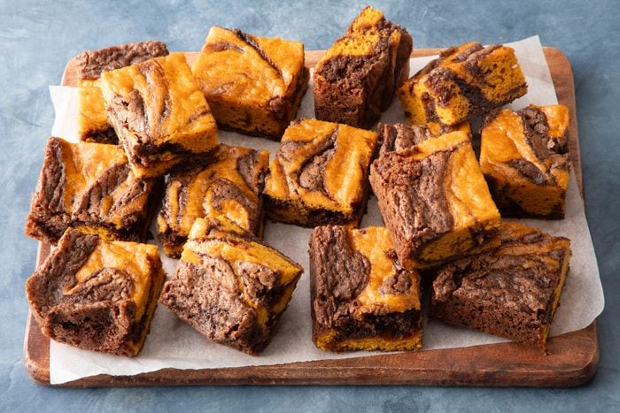

Ingredients
- 1 cup sugar
- 3/4 cup all-purpose flour
- 1/4 cup baking cocoa
- 1/2 teaspoon salt
- 1/4 teaspoon baking soda
- 1/2 cup canola oil
- 2 large eggs, room temperature
- 1 teaspoon vanilla extract
Pumpkin Batter:
- 1 cup sugar
- 1 cup all-purpose flour
- 1/2 teaspoon salt
- 1/2 teaspoon pumpkin pie spice
- 1/4 teaspoon baking soda
- 3/4 cup canned pumpkin
- 2 large eggs, room temperature
Instructions
- Preheat the oven to 350°F. Line a 13×9-inch baking pan with parchment, letting the ends extend up the sides. Grease the parchment with baking spray.
- In a large bowl, whisk together the sugar, all-purpose flour, baking cocoa, salt and baking soda. In a small bowl, whisk together the canola oil, eggs and vanilla extract. Stir the wet ingredients into the dry ingredients just until moistened.
- In a large bowl, whisk together the sugar, all-purpose flour, salt, pumpkin pie spice and baking soda. In a small bowl, whisk together the pumpkin puree and eggs. Stir the wet ingredients into the dry ingredients just until moistened.
- Evenly spread half the brownie batter into the prepared pan to all edges and corners of the pan. Don’t be alarmed if the layer seems thin—it should be! Then drop half the pumpkin batter by tablespoonfuls over the top. Gently spread the pumpkin batter to cover most of the brownie batter.
- Drop the remaining pumpkin and brownie batters by tablespoonfuls over the pumpkin layer. Gently swirl the batters on top with a knife or toothpick.
- Bake the pumpkin brownies until a toothpick comes out clean, 25 to 30 minutes. Cool the brownies in the pan on a wire rack at room temperature. Lifting with the edges of the parchment, remove the pumpkin brownies from the pan.
- Cut them into bars and enjoy.